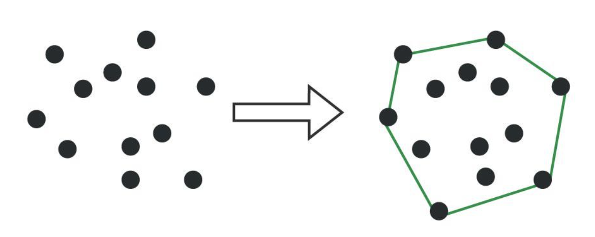
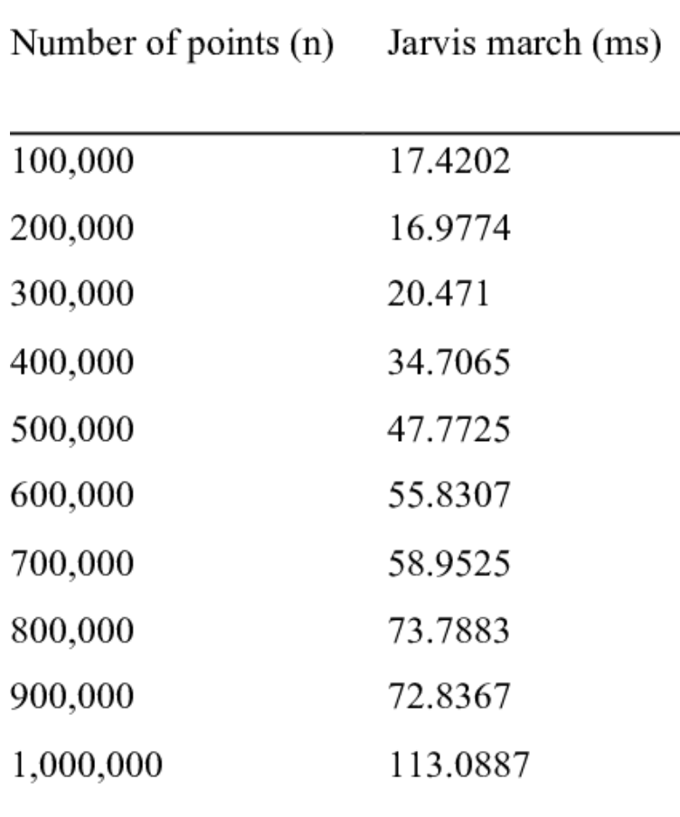

JARVIS MARCH ALGORITHM
The Jarvis march algorithm, also known as the gift-wrapping algorithm, is a technique used in computational geometry to find the convex hull of a set of points. The convex hull is the smallest possible convex polygon that encloses all the points in the set.
WORKING OF THE ALGORITHM
The working of the algorithm can be divided into three operations.
- Initialization: The algorithm starts by finding the leftmost point in the set and designating it as the starting point. If there are multiple points with the same x-coordinate, the point with the lowest y-coordinate is chosen to be the starting point. This point will always be part of the convex hull.
- Finding the Next Point: At each iteration, we consider the current point on the hull and iterate through all the remaining points. For each point, we check its orientation relative to the current point and the next candidate point in the hull. If a point is found to be more "counter-clockwise" than the current next candidate, it becomes the new candidate. We essentially keep track of the point that creates the largest left turn with the current point and the next candidate point on the hull.
- Termination: This process of finding the most "counter-clockwise" point continues until we reach the point where the next candidate becomes the starting (leftmost) point again. This signifies that we have completed a full loop around the convex hull.

RUNNING TIME ANALYSIS
The time complexity of Jarvis's march algorithm is O(nh), where n is the total number of points and h is the number of points on the convex hull. This means the running time depends on both the number of input points and the number of points in the final hull. In the best case scenario, where the number of hull points is small compared to the total number of points, the algorithm performs well. However, in the worst case scenario, where all points are on the hull, the time complexity becomes O(n2). Thus it can be summarized as follows:
- Time Complexity = O(nh), where n: total number of points, h: number of points on the convex hull
- Best Case Time Complexity = O(n), where h << n
- Worst Case Time Complexity = O(n2), where h ≈ n

BREAKING DOWN THE TIME COMPLEXITY
Here is a detailed breakdown of the time complexity analysis of Jarvis March Algorithm:
- The algorithm iterates through all points once to find the starting point (O(n)).
- In the main loop, it iterates through the remaining points (n-h times on average) to find the next point on the hull
- Inside the loop, it compares the candidate point with all other points (O(n)) in the worst case.
- However, since the loop terminates when we reach the starting point again, the total number of comparisons within the loop is proportional to the number of points in the hull, i.e., 'h'.
- This leads to the O(nh) time complexity.
OTHER CONSIDERATIONS
- Jarvis March is a relatively simple algorithm to understand and implement.
- It performs well when the number of points in the hull is small compared to the total number of points.
- However, other algorithms like Graham scan have better overall time complexity (O(nlogn)) for most cases.
- Jarvis march is considered an output-sensitive algorithm, meaning its efficiency depends on the size of the output (number of hull points).
Overall, Jarvis March offers a good balance between simplicity and efficiency for specific scenarios where the number of hull points is expected to be small.
CONCLUSION
The Jarvis March algorithm provides an efficient way to compute the convex hull of a set of points in the plane. Despite its simplicity, it offers good performance, especially when the number of points is relatively small. However, for large datasets, more sophisticated algorithms might be preferred due to their better asymptotic running time.